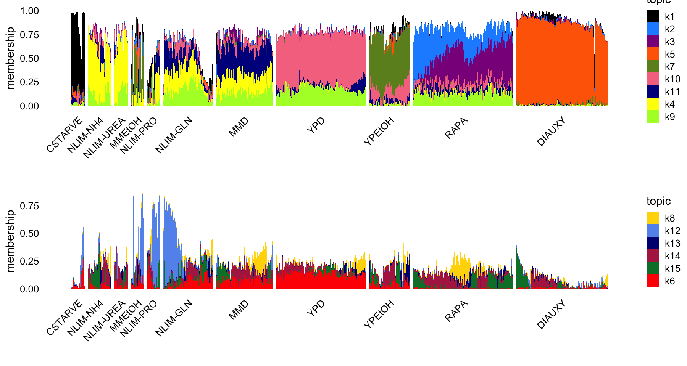
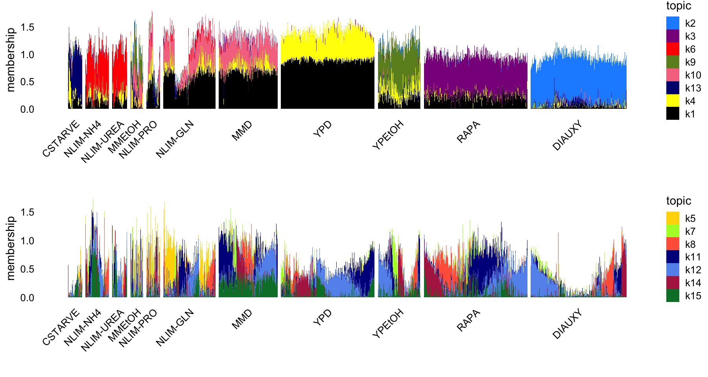

Last updated: 2025-08-21
Checks: 5 2
Knit directory:
single-cell-jamboree/analysis/
This reproducible R Markdown analysis was created with workflowr (version 1.7.1). The Checks tab describes the reproducibility checks that were applied when the results were created. The Past versions tab lists the development history.
The R Markdown file has unstaged changes. To know which version of
the R Markdown file created these results, you’ll want to first commit
it to the Git repo. If you’re still working on the analysis, you can
ignore this warning. When you’re finished, you can run
wflow_publish to commit the R Markdown file and build the
HTML.
The global environment had objects present when the code in the R
Markdown file was run. These objects can affect the analysis in your R
Markdown file in unknown ways. For reproduciblity it’s best to always
run the code in an empty environment. Use wflow_publish or
wflow_build to ensure that the code is always run in an
empty environment.
The following objects were defined in the global environment when these results were created:
| Name | Class | Size |
|---|---|---|
| colors | character | 1016 bytes |
| cond_factors | numeric | 112 bytes |
| cond_topics | numeric | 176 bytes |
| conditions | character | 824 bytes |
| counts | dgCMatrix | 333.7 Mb |
| factor_colors | character | 1 Kb |
| fl_nmf_ldf | list | 7.3 Mb |
| genes | data.frame | 2.2 Mb |
| L | matrix;array | 305.1 Kb |
| other_factors | numeric | 112 bytes |
| other_topics | numeric | 96 bytes |
| p1 | gg;ggplot | 327.8 Kb |
| p2 | gg;ggplot | 296.5 Kb |
| rows | integer | 6.3 Kb |
| rows1 | integer | 2.4 Kb |
| rows2 | integer | 4 Kb |
| sample_info | data.frame | 6.3 Mb |
| session_info | sessionInfo | 503.4 Kb |
| timings | list | 2 Kb |
| tm | poisson_nmf_fit;list | 22 Mb |
| topic_colors | character | 1 Kb |
The command set.seed(1) was run prior to running the
code in the R Markdown file. Setting a seed ensures that any results
that rely on randomness, e.g. subsampling or permutations, are
reproducible.
Great job! Recording the operating system, R version, and package versions is critical for reproducibility.
Nice! There were no cached chunks for this analysis, so you can be confident that you successfully produced the results during this run.
Great job! Using relative paths to the files within your workflowr project makes it easier to run your code on other machines.
Great! You are using Git for version control. Tracking code development and connecting the code version to the results is critical for reproducibility.
The results in this page were generated with repository version dee707e. See the Past versions tab to see a history of the changes made to the R Markdown and HTML files.
Note that you need to be careful to ensure that all relevant files for
the analysis have been committed to Git prior to generating the results
(you can use wflow_publish or
wflow_git_commit). workflowr only checks the R Markdown
file, but you know if there are other scripts or data files that it
depends on. Below is the status of the Git repository when the results
were generated:
Untracked files:
Untracked: analysis/lps_cache/
Untracked: analysis/lps_fl_nmf_cc_k10.csv
Untracked: analysis/lps_gsea_fl_nmf_cc_k10.csv
Untracked: analysis/mcf7_cache/
Untracked: analysis/pancreas_cytokine_S1_factors_cache/
Untracked: analysis/pancreas_cytokine_lsa_clustering_cache/
Untracked: data/GSE125162_ALL-fastqTomat0-Counts.tsv.gz
Untracked: data/GSE132188_adata.h5ad.h5
Untracked: data/GSE156175_RAW/
Untracked: data/GSE183010/
Untracked: data/Immune_ALL_human.h5ad
Untracked: data/pancreas_cytokine.RData
Untracked: data/pancreas_cytokine_lsa.RData
Untracked: data/pancreas_cytokine_lsa_v2.RData
Untracked: data/pancreas_endocrine.RData
Untracked: data/pancreas_endocrine_alldays.h5ad
Untracked: data/yeast.RData
Untracked: output/panc_cyto_lsa_res/
Unstaged changes:
Modified: analysis/yeast_factors.Rmd
Note that any generated files, e.g. HTML, png, CSS, etc., are not included in this status report because it is ok for generated content to have uncommitted changes.
These are the previous versions of the repository in which changes were
made to the R Markdown (analysis/yeast_factors.Rmd) and
HTML (docs/yeast_factors.html) files. If you’ve configured
a remote Git repository (see ?wflow_git_remote), click on
the hyperlinks in the table below to view the files as they were in that
past version.
| File | Version | Author | Date | Message |
|---|---|---|---|---|
| Rmd | dee707e | Peter Carbonetto | 2025-08-21 | Added Structure plots for the topic model in yeast_factors.Rmd. |
| Rmd | 1efebce | Peter Carbonetto | 2025-08-21 | Small edit to yeast_factors.Rmd. |
| Rmd | 58852e7 | Peter Carbonetto | 2025-08-21 | Working on the Structure plots from the NMF analyses of the budding yeast data. |
Load the packages needed for this analysis:
library(Matrix)
library(fastTopics)
library(flashier)
library(singlecelljamboreeR)
library(ggplot2)
library(cowplot)Load the budding yeast data:
load("../data/yeast.RData")Modify the condition labels to match the abbreviations used in the eLife paper:
levels(sample_info$Condition) <-
c("NLIM-NH4","CSTARVE","NLIM-GLN","MMEtOH","MMD","NLIM-PRO",
"NLIM-UREA","YPD","DIAUXY","RAPA","YPEtOH")Reorder the growth conditions in a more logical manner:
conditions <- c("CSTARVE","NLIM-NH4","NLIM-UREA","MMEtOH","NLIM-PRO",
"NLIM-GLN","MMD","YPD","YPEtOH","RAPA","DIAUXY")
sample_info <- transform(sample_info,
Condition = factor(Condition,conditions))Load the results of running fastTopics and flashier on these data:
load("../output/yeast_factors.RData")Structure plots:
topic_colors <-
c("#000000","dodgerblue","darkmagenta","yellow","#FF6800","red",
"olivedrab","gold","greenyellow","#F6768E","darkblue","cornflowerblue",
"navyblue","#B32851","#007D34")
cond_topics <- c(1,2,3,5,7,10,11,4,9)
other_topics <- c(8,12,13,14,15,6)
set.seed(1)
L <- poisson2multinom(tm)$L
rows1 <- which(is.element(sample_info$Condition,c("YPD","RAPA")))
rows2 <- which(!is.element(sample_info$Condition,c("YPD","RAPA")))
rows1 <- sample(rows1,600)
rows2 <- sample(rows2,1000)
rows <- c(rows1,rows2)
L <- L[rows,]
p1 <- structure_plot(L,group = sample_info[rows,"Condition"],
topics = cond_topics,colors = topic_colors,
gap = 10,n = Inf,verbose = FALSE) +
labs(y = "membership")
p2 <- structure_plot(L,group = sample_info[rows,"Condition"],
topics = other_topics,colors = topic_colors,
gap = 10,n = Inf,verbose = FALSE) +
labs(y = "membership")
plot_grid(p1,p2,nrow = 2,ncol = 1)
Structure plots:
factor_colors <-
c("#000000","dodgerblue","darkmagenta","yellow","gold","red",
"greenyellow","tomato","olivedrab","#F6768E","darkblue","cornflowerblue",
"navyblue","#B32851","#007D34")
cond_factors <- c(2,3,6,9,10,13,4,1)
other_factors <- c(5,7,8,11,12,14,15)
set.seed(1)
L <- fl_nmf_ldf$L
colnames(L) <- paste0("k",1:15)
rows1 <- which(is.element(sample_info$Condition,c("YPD","RAPA")))
rows2 <- which(!is.element(sample_info$Condition,c("YPD","RAPA")))
rows1 <- sample(rows1,600)
rows2 <- sample(rows2,1000)
rows <- c(rows1,rows2)
L <- L[rows,]
p1 <- structure_plot(L,group = sample_info[rows,"Condition"],
topics = cond_factors,colors = factor_colors,
gap = 10,n = Inf,verbose = FALSE) +
labs(y = "membership")
p2 <- structure_plot(L,group = sample_info[rows,"Condition"],
topics = other_factors,colors = factor_colors,
gap = 10,n = Inf,verbose = FALSE) +
labs(y = "membership")
plot_grid(p1,p2,nrow = 2,ncol = 1)
sessionInfo()
# R version 4.3.3 (2024-02-29)
# Platform: aarch64-apple-darwin20 (64-bit)
# Running under: macOS 15.5
#
# Matrix products: default
# BLAS: /Library/Frameworks/R.framework/Versions/4.3-arm64/Resources/lib/libRblas.0.dylib
# LAPACK: /Library/Frameworks/R.framework/Versions/4.3-arm64/Resources/lib/libRlapack.dylib; LAPACK version 3.11.0
#
# locale:
# [1] en_US.UTF-8/en_US.UTF-8/en_US.UTF-8/C/en_US.UTF-8/en_US.UTF-8
#
# time zone: America/Chicago
# tzcode source: internal
#
# attached base packages:
# [1] stats graphics grDevices utils datasets methods base
#
# other attached packages:
# [1] ggplot2_3.5.2 cowplot_1.1.3
# [3] singlecelljamboreeR_0.1-39 flashier_1.0.56
# [5] ebnm_1.1-34 fastTopics_0.7-25
# [7] Matrix_1.6-5 workflowr_1.7.1
#
# loaded via a namespace (and not attached):
# [1] tidyselect_1.2.1 viridisLite_0.4.2 dplyr_1.1.4
# [4] farver_2.1.2 fastmap_1.2.0 lazyeval_0.2.2
# [7] reshape_0.8.9 promises_1.3.3 digest_0.6.37
# [10] lifecycle_1.0.4 processx_3.8.3 invgamma_1.2
# [13] magrittr_2.0.3 compiler_4.3.3 rlang_1.1.6
# [16] sass_0.4.10 progress_1.2.3 tools_4.3.3
# [19] yaml_2.3.10 data.table_1.17.6 knitr_1.50
# [22] labeling_0.4.3 prettyunits_1.2.0 htmlwidgets_1.6.4
# [25] scatterplot3d_0.3-44 plyr_1.8.9 RColorBrewer_1.1-3
# [28] Rtsne_0.17 withr_3.0.2 purrr_1.0.4
# [31] grid_4.3.3 susieR_0.14.18 git2r_0.33.0
# [34] colorspace_2.1-0 scales_1.4.0 gtools_3.9.5
# [37] dichromat_2.0-0.1 cli_3.6.5 rmarkdown_2.29
# [40] crayon_1.5.3 generics_0.1.4 RcppParallel_5.1.10
# [43] rstudioapi_0.15.0 httr_1.4.7 reshape2_1.4.4
# [46] pbapply_1.7-2 cachem_1.1.0 stringr_1.5.1
# [49] splines_4.3.3 parallel_4.3.3 softImpute_1.4-3
# [52] matrixStats_1.2.0 vctrs_0.6.5 jsonlite_2.0.0
# [55] callr_3.7.5 hms_1.1.3 mixsqp_0.3-54
# [58] ggrepel_0.9.6 irlba_2.3.5.1 horseshoe_0.2.0
# [61] trust_0.1-8 plotly_4.11.0 jquerylib_0.1.4
# [64] tidyr_1.3.1 glue_1.8.0 ps_1.7.6
# [67] uwot_0.2.3 stringi_1.8.7 Polychrome_1.5.1
# [70] gtable_0.3.6 later_1.4.2 quadprog_1.5-8
# [73] tibble_3.3.0 pillar_1.11.0 htmltools_0.5.8.1
# [76] truncnorm_1.0-9 R6_2.6.1 rprojroot_2.0.4
# [79] evaluate_1.0.4 lattice_0.22-5 RhpcBLASctl_0.23-42
# [82] SQUAREM_2021.1 ashr_2.2-66 httpuv_1.6.14
# [85] bslib_0.9.0 Rcpp_1.1.0 deconvolveR_1.2-1
# [88] whisker_0.4.1 xfun_0.52 fs_1.6.6
# [91] getPass_0.2-4 pkgconfig_2.0.3